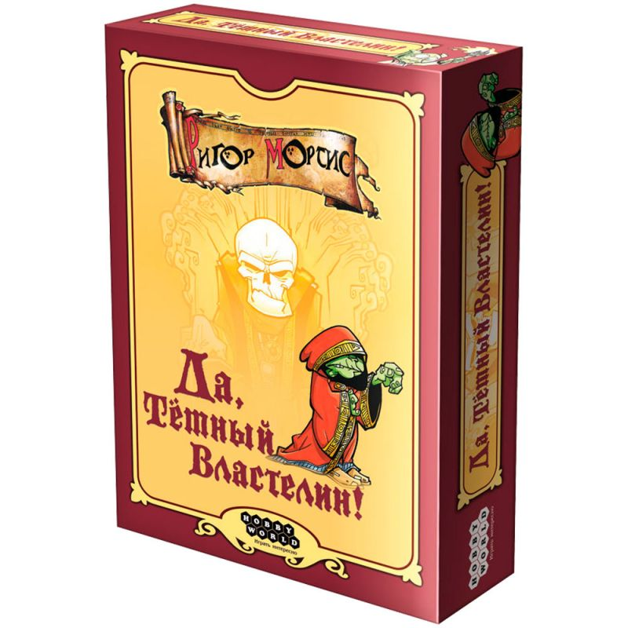

Да, мой тёмный властелин
«Да, мой тёмный властелин» — юмористическая стратегия о тёмном властелине, которого ждут герои и паладины. Управляйте верными миньонами, стройте планы по захвату мира и решайте, каких подручных отправить наверняка на гибель. Вдохновляйте своих слуг, вовремя избавляйтесь от лишних — и добейтесь того, чтобы армии героев отступали, а королевства трепетали перед вашим именем.
🎲
Правила игры
Посмотрите видео и почитайте PDF — и можно за стол!
Видео-правила
Правила в PDF
Источник правил: Hobby World